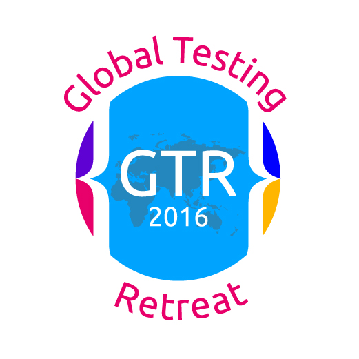

<table style="font-size: 8pt; width : 1200px; background-color : rgb(51,149,250); color : white; box-shadow: 3px 3px 3px rgb(229,229,229);">
    <tr>
        <td style="width : 25%; text-align : left; ">#ATAGTR2016</td>
        <td style="width : 50%; text-align : center">Global Testing Retreat Pune 2016</td>
        <td style="width : 25%; text-align : right">© Schalk W. Cronjé</td>
    </tr>
</table>